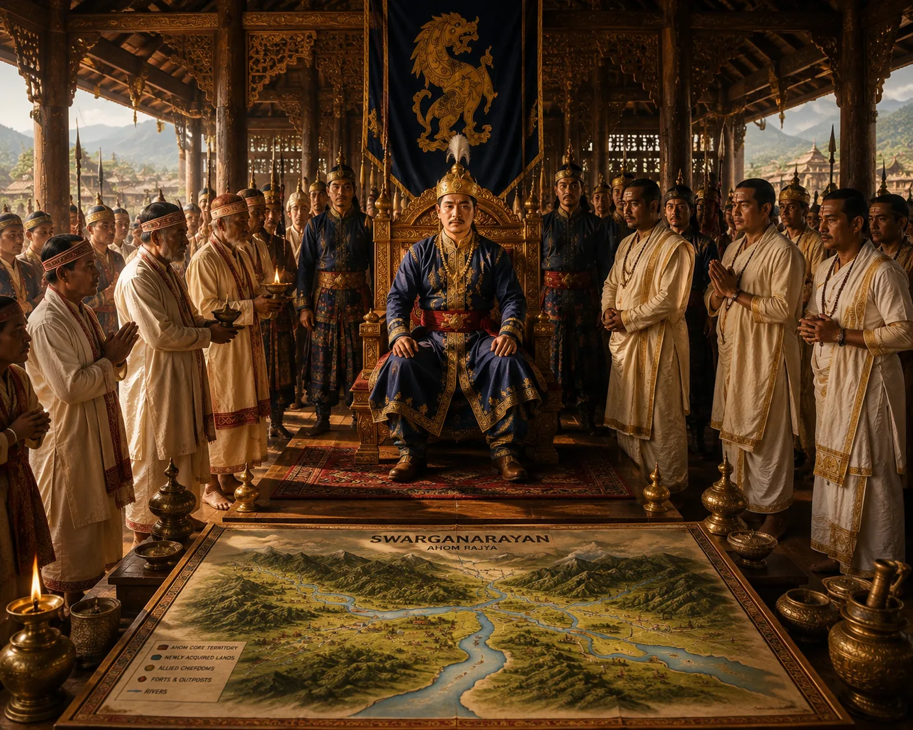

Adoption of the Title Swarganarayan and Saka Calendar
c. 1510 · Swarganarayan’s kingdom

Suhungmung officially assumes the Sanskrit title 'Swarganarayan' (Lord of Heaven), introducing the Saka calendar into state epigraphy.
Sources have not yet been catalogued for this record.
People: Suhungmung (Swarganarayan)
Open this scene in the interactive archive · Follow this event on MAP